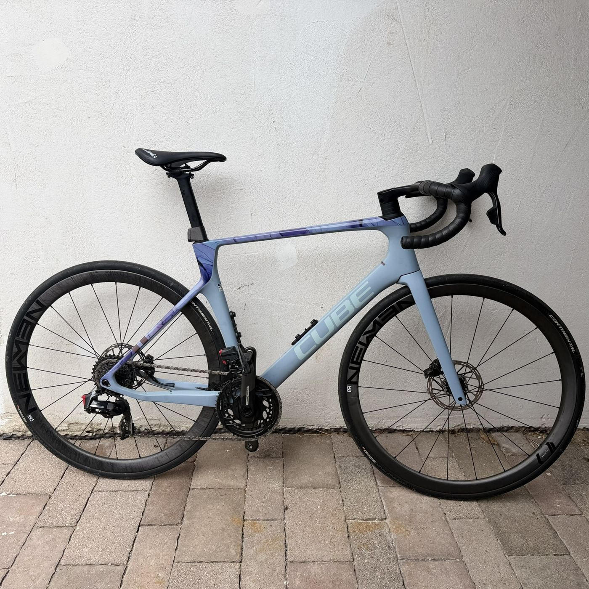
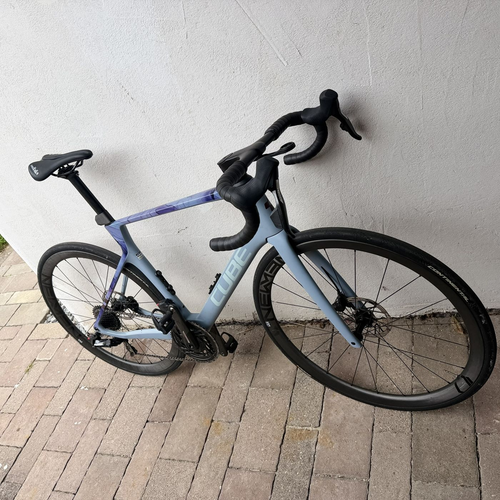

Cube Agree C:62 SLX

Leichtes Carbon-Rennrad aus Cubes Topmodell-Reihe, ab Werk mit SRAM Force AXS und Carbonlaufrädern von Newmen aufgebaut.
Rahmen
C:62 Advanced Twin Mold Carbon – Cubes Bezeichnung für die hochwertigste Laminat- und Fertigungsstufe im eigenen Rahmenbau, ausgelegt auf ein gutes Verhältnis von Gewicht und Steifigkeit. Vollständig innenverlegte Züge, integrierte Sattelklemme, teils mit optionaler Rahmen-Storage-Box.
Antrieb – SRAM Force AXS
Elektronische 24-Gang-Schaltung mit 48/35-Kettenblättern und 10-36-Kassette, powermeterfähig. Vollcarbon-Gabel, integrierter Carbon-Lenker/Vorbau.
Laufräder & Reifen
Newmen Advanced SL R.38 Carbonlaufräder, bereift mit Continental Grand Prix 5000 in 28-622 (Kevlar-Variante).
Gewicht
Herstellerangabe je nach Rahmengröße und Modelljahr rund 7–7,5 kg.

Warum dieses Bike
Mein Einstieg in die Rennrad-Bubble. Ohne große Vorerfahrung habe ich mich bewusst für ein Endurance-Rennrad statt einen reinrassigen Renner entschieden – das verzeiht mehr und war für mich die bessere Ausgangsbasis.